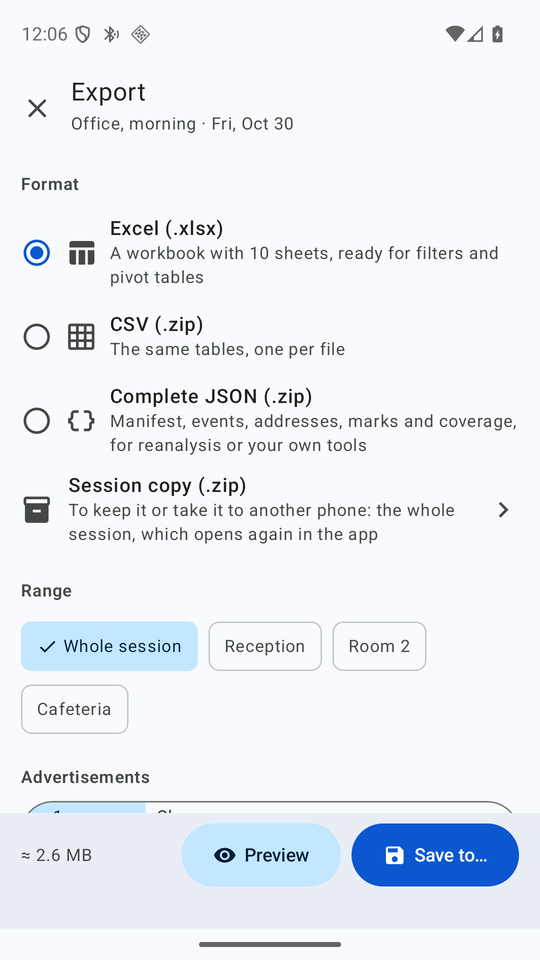

Export a Bluetooth LE scan to Excel or CSV from an Android phone
Most BLE scanner apps show you a live list and that's it. That's fine for a quick look, but not when you want to answer questions like these:
- How often does my phone hear my sensor, and when does it stop?
- How does the signal change over an hour?
- Which devices were around at each place I stopped?
For that, you need the advertisements your phone received in a file you can open in Excel, pandas or R. This is how to get one from an Android phone with BLE Observer.
1. Record a session
Start a session and leave the phone where you want to measure. The free version records up to 30 minutes; Pro goes to 90 minutes, 4 or 8 hours, or until you stop it.
If you move between places, add a mark at each one, like "desk" or "meeting room". The export keeps them, so you can filter by place.
2. Choose the format
From the session summary, tap the share icon (Export):
| Format | What you get | Best for |
|---|---|---|
| Excel (.xlsx) | One sheet per table, with filters, real dates and numbers as numbers | Looking and filtering by hand |
| CSV | A zip with one CSV per table, with ; and decimal comma or standard , | Spreadsheets in any language, scripts |
| JSON | A zip with a manifest of sizes and sha256 checksums | Re-analysing in code, with each advertisement's raw bytes |

Two options matter for analysis. Under Advertisements, the app picks "1 per second"; to get every reception, change it to All. And pseudonyms are on by default: to look up your sensor by name, turn them off.
The preview is free; saving the file is part of Pro.
3. What's inside
Sheet and column names are always in English, whatever the phone's language, so formulas and scripts don't break. A Dictionary sheet explains every column.
- Devices: one row per address, with:
- advertised name and declared manufacturer;
- first and last time heard;
- number of advertisements;
- minimum, median and maximum signal (
rssi_min,rssi_median,rssi_max); - the marks where it was heard.
- Advertisements: the advertisements received, as you choose (one per second, changes only or all), with:
- local time, UTC and milliseconds since the start;
- signal in dBm;
- the original bytes in hex;
- whether the content changed since the previous one from that address.
- Groups: which rotating addresses the app thinks are the same device, and why.
- Beacons: iBeacon, AltBeacon and Eddystone, with their identifiers, battery and temperature if they send telemetry.
- GATT: what the app read from a device's services, if you asked it to connect.
- Marks and Events: the places you marked, plus the pauses and cuts the app recorded.
4. A first analysis in Python
With All advertisements and no pseudonyms:
import pandas as pd
ads = pd.read_excel("btobserver_session.xlsx", sheet_name="Advertisements")
dev = pd.read_excel("btobserver_session.xlsx", sheet_name="Devices")
# My sensor: time between received advertisements and signal over time
mine = dev.loc[dev["advertised_name"] == "MySensor", "id"].iloc[0]
s = ads[ads["id"] == mine].sort_values("ms_from_start")
gaps = s["ms_from_start"].diff() / 1000
print(gaps.describe()) # median in seconds, and the longest gap
s.plot(x="date_time", y="rssi_dbm")This does not measure how often the sensor transmits. Android does not listen all the time and misses advertisements, so the time between received ones is usually longer than the real one, and a gap does not prove the sensor dropped out.
Sharing a file without giving away addresses
Leave pseudonyms on when exporting. Addresses, advertised names and beacon identifiers become DIR-0001, NAME-001 and BEACON-001, the same across the whole file, and your notes are left out. Your labels and the names of your marks are included, and with the raw bytes a device can still be recognisable. It is not an anonymous file: check it before sharing.
BLE Observer is free on Google Play (Android 13 or later; in the EU, the US, the UK, Canada and Australia), with a one-time Pro for long sessions and exports.